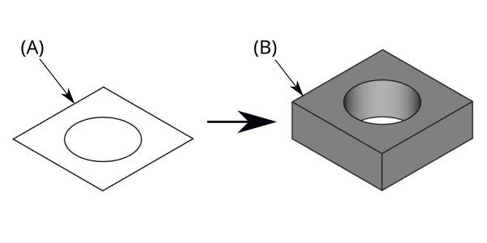

PartDesign Pad/cs
This documentation is not finished. Please help and contribute documentation.
GuiCommand model explains how commands should be documented. Browse Category:UnfinishedDocu to see more incomplete pages like this one. See Category:Command Reference for all commands.
See WikiPages to learn about editing the wiki pages, and go to Help FreeCAD to learn about other ways in which you can contribute.
|
Návrh dílu Deska |
| Umístění Menu |
|---|
| Návrh dílu → Deska |
| Pracovní stoly |
| Návrh dílu |
| Výchozí zástupce |
| Nikdo |
| Představen ve verzi |
| - |
| Viz také |
| Nikdo |
Úvod
Nástroj Deska vytlačuje náčrt nebo plochu podél přímé dráhy.
{kind=link}

Nákres (A) vlevo; konečný výsledek po operaci s deskou (B) vpravo
Použití
- Vyberte jednu náčrtovou plochu nebo jednu či více ploch z tělesa.
- Nástroj lze vyvolat několika způsoby:
- Stiskněte tlačítko
 Deska.
Deska. - Z menu vyberte možnost Návrh dílu → Additive Features → Deska.
- Stiskněte tlačítko
- Nastavte parametry desky, viz Možnosti níže.
- Stiskněte tlačítko OK.
Možnosti
- Vyberte jednu náčrtovou plochu nebo jednu či více ploch z tělesa.
Při vytváření desky nebo po dvojitém kliknutí na existující desku ve stromovém zobrazení se zobrazí panel úloh Parametry desky. Nabízí následující nastavení:
{kind=link}
Type
Typ nabízí pět různých způsobů určení délky, na kterou bude podložka protlačována.
Rozměr
Zadání číselné hodnoty pro výšku desky. Defaultní směr vysunutí je ven z podkladu, ale může to být změněno zakliknutím volby Opačně. Vysunutí je ve směru kolmém k definující rovině náčrtu. S volbou Symetricky s rovinou bude deska vysunuta z poloviny na jedné straně roviny a z poloviny na druhé straně roviny. Záporný rozměr není povolen. Místo toho použijte volbu Opačně.
K poslední
Deska se vysune až k poslední ploše tělesa ve směru vysunutí. Není-li v daném směru žádná plocha, zobrazí se chybové hlášení.
K první
Deska se vysune k první ploše tělesa ve směru vysunutí. Není-li v daném směru žádná plocha, zobrazí se chybové hlášení.
Až k ploše
Deska se vysune až k ploše v objektu, která je vybrána kliknutím na ni. Není-li zde žádný objekt, nebude akceptován žádný výběr.
Dva rozměry
Umožňuje zadat druhý rozměr. Pak se deska o tuto vzdálenost vysune na opačnou stranu (vzhledem k podkladové rovině). Opět lze využít volby Opačně.
Up to shape
introduced in 1.0: The pad will extend up to the selected shape. Optionally press the Select shape button and select a shape. Leave the Select all faces checkbox enabled or disable it, press the Select faces button and select the faces up to which the pad should be created.
Offset to face
Offset from face at which the pad will end. This option is only available if Type is To last, To first or Up to face.
Length
Defines the length of the pad. This option is only available if Type is Dimension or Two dimensions. The length is measured along the direction vector, or along the normal of the sketch or face. Negative values are not possible. Use the Reversed option instead.
2nd length
Defines the length of the pad in the opposite direction. This option is only available if Type is Two dimensions.
Symmetric to plane
Check this option to extrude half the given length to either side of the sketch or face. This option is only available if Type is Dimension.
Reversed
Reverses the direction of the pad.
Direction
Direction/edge
You can select the direction of the extrusion:
- Sketch normal or Face normal: The sketch or face is extruded in the direction of its normal. If you have selected several sketches or faces to be extruded, the normal of the first one will be used.
- Select reference…: The sketch or face is extruded in the direction of a straight edge or a datum line selected from the Body.
- Custom direction: The sketch or face is extruded in the direction of the specified vector.
Show direction
If checked, the pad direction will be shown. In case the pad uses a Custom direction, it can be changed.
Length along sketch normal
If checked, the pad length is measured along the sketch or face normal, otherwise along the custom direction.
Taper angle
Tapers the pad in the extrusion direction by the given angle. A positive angle means the outer pad border gets wider. Note that inner structures receive the opposite taper angle. This is done to facilitate the design of molds and molded parts. This option is only available if Type is Dimension or Two dimensions.
2nd taper angle
Tapers the pad in the opposite extrusion direction by the given angle. See Taper angle. This option is only available if Type is Two dimensions.
Properties
Data
Pad
- ÚdajeType (
Enumeration): Defines how the pad will be extruded, see Options. - ÚdajeLength (
Length): Defines the length of the pad, see Options. - ÚdajeLength2 (
Length): Second pad length in case the ÚdajeType is TwoLengths, see Options. - ÚdajeUse Custom Vector (
Bool): If checked, the pad direction will not be the normal vector of the sketch but the given vector, see Options. - ÚdajeDirection (
Vector): Vector of the pad direction if ÚdajeUse Custom Vector is used. - ÚdajeReference Axis (
LinkSub) - ÚdajeAlong Sketch Normal (
Bool): If true, the pad length is measured along the sketch normal. Otherwise and if ÚdajeUse Custom Vector is used, it is measured along the custom direction. - ÚdajeUp To Face (
LinkSub): A face the pad will extrude up to, see Options. - ÚdajeOffset (
Length): Offset from face in which the pad will end. This is only taken into account if the ÚdajeType option UpToLast, UpToFirst or UpToFace is used. - ÚdajeTaper Angle (
Angle) - ÚdajeTaper Angle2 (
Angle)
Part Design
- ÚdajeRefine (
Bool): True or false. Cleans up residual edges left after the operation. This property is initially set according to the user's settings (found in Preferences → Part Design → General → Model settings).
Sketch Based
- ÚdajeProfile (
LinkSub) - ÚdajeMidplane (
Bool) - ÚdajeReversed (
Bool) - ÚdajeAllow Multi Face (
Bool)
Omezení
- Stejně jako všechny funkce Návrh součástí, Pad také vytváří těleso, takže skica musí obsahovat uzavřený profil, jinak selže s chybou „Nepodařilo se ověřit zlomenou tvář“. Uvnitř většího profilu může být více uzavřených profilů za předpokladu, že se žádné neprotínají (například obdélník se dvěma kruhy uvnitř).
- Algoritmus používaný pro „To First“ a „To Last“ je:
- Vytvořte čáru přes těžiště náčrtu
- Najděte všechny plochy podpěry oříznuté touto čarou
- Vyberte plochu, kde je průsečík nejblíže / nejdále od náčrtu
- To znamená, že nalezená tvář nemusí být vždy tím, co jste očekávali. Pokud se setkáte s tímto problémem, použijte místo toho typ „“ „Nahoru do tváře“ a vyberte požadovanou tvář.
- Pro velmi zvláštní případ vytlačování na konkávní povrch, kde je náčrt větší než tento povrch, vytlačování selže. Toto je nevyřešená chyba.
- v0.16 a nižší Neexistuje žádné automatické čištění, např. sousedních rovinných povrchů do jednoho povrchu. Můžete to opravit ručně v pracovním stole součásti pomocí Zpřesnit tvar (který vytvoří nepřipojený, neparametrický těleso) nebo pomocí Zpřesnit tvarovou funkci z OpenSCAD Workbench, který vytváří parametrickou funkci.
- Helper tools: New Body, New Sketch, Attach Sketch, Edit Sketch, Validate Sketch, Check Geometry, Sub-Shape Binder, Clone
- Modeling tools:
- Additive tools: Pad, Revolution, Additive Loft, Additive Pipe, Additive Helix, Additive Box, Additive Cylinder, Additive Sphere, Additive Cone, Additive Ellipsoid, Additive Torus, Additive Prism, Additive Wedge
- Subtractive tools: Pocket, Hole, Groove, Subtractive Loft, Subtractive Pipe, Subtractive Helix, Subtractive Box, Subtractive Cylinder, Subtractive Sphere, Subtractive Cone, Subtractive Ellipsoid, Subtractive Torus, Subtractive Prism, Subtractive Wedge
- Boolean: Boolean Operation
- Dress-up tools: Fillet, Chamfer, Draft, Thickness
- Transformation tools: Mirror, Linear Pattern, Polar Pattern, Multi-Transform, Scale
- Additional tools: Shape Binder, Involute Gear, Sprocket, Shaft Design Wizard
- Context menu: Suppressed, Set Tip, Move Object To…, Move Feature After…
- Preferences: Preferences, Fine tuning
- Getting started
- Installation: Download, Windows, Linux, Mac, Additional components, Docker, AppImage, Ubuntu Snap
- Basics: About FreeCAD, Interface, Mouse navigation, Selection methods, Object name, Preferences, Workbenches, Document structure, Properties, Help FreeCAD, Donate
- Help: Tutorials, Video tutorials
- Workbenches: Std Base, Assembly, BIM, CAM, Draft, FEM, Inspection, Material, Mesh, OpenSCAD, Part, PartDesign, Points, Reverse Engineering, Robot, Sketcher, Spreadsheet, Surface, TechDraw, Test Framework
- Hubs: User hub, Power users hub, Developer hub